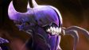
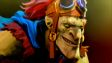
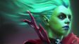
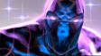
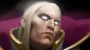
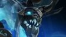
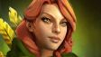
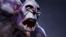
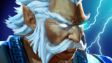

Ancient Apparition по имени Калдр — проекция из далеких мест за пределами времени. Он возник из холодной, бесконечной пустоты, которая предшествует вселенной и ждет её конца. Калдр был, Калдр есть, Калдр будет... И тот, кого мы видим в нашем мире, хоть и кажется нам сильным и, в общем-то, является таким, всего лишь слабое увядшее эхо настоящего, вечного Калдра. Кто-то полагает, что когда космос будет отживать свои последние года, Ancient Apparition будет становиться моложе, ярче и сильней, в то время как вечность будет иссякать. И тогда его власть надо льдом остановит все материи, а образ начнет источать наполненный леденящим душу ужасом и невозможный для созерцания свет.
Ancient Apparition

Когда самим богам снятся кошмарные сны, их приносит сам неудержимый элементаль кошмаров Bane. Иное имя ему — Атропос, и родом он из ночных кошмаров богини Никташи. Сила ее невыразимых страхов была столь велика, что из нее родился Bane — вырвавшись из снов богини, он поглотил ее бессмертие и сотворил себе форму из ее маслянистой крови. Он — сосредоточение страха. Смертным, что слышат его голос, он шепчет их самые сокровенные мрачные тайны. Атропос взывает к глубочайшим фобиям, засевшим в сердцах других героев. И даже бодрствование не спасет жертву, ибо вечно капающая с призрачной формы элементаля черная кровь заставляет врагов увязнуть в кошмарной дреме, будто в смоле. Когда Bane парит над полем боя, любой герой начинает бояться темноты.
Bane

Среди тварей, обитающих в джунглях Йама Раскав, такой вещи, как гармония, попросту нет. Любое проявление слабости приведет к мгновенной смерти от клювов, когтей, жвал или копыт. Поговаривают, что давным-давно, когда Batrider еще был простым пареньком, выкапывающим сорняки с семейного поля, его схватила огромная летучая мышь, искавшая себе пищу. Но у парня были другие планы, и, вырвавшись из лап хищника, он вскарабкался на спину зверя и зарубил его своими инструментами. Выбравшись из кровавых ошметков, пьяный от ощущения полета, мальчик осознал, что нашел свое призвание. Он рос и каждое лето выходил на то же поле, частенько лез в кусты в поиске тех же ощущений, которые он испытывал, стоя на пороге смерти от падения либо острых клыков. Годы шли, но пламя в его душе разгоралось только сильнее. Он исследовал заросли, забираясь все глубже и глубже с каждым своим походом, пока, наконец, не нашел путь к пещерам — самому сердцу враждебности. Легенда гласит, что той знойной ночью всадник имел с собой только веревку, бутылку жидкой отваги и собственную решимость, когда, мечтая почувствовать небеса снова, прыгнул внутрь...
Batrider

Рожденный в безбожной Хажадальской пустоши, Chen рос среди бандитских племен, скрывающихся от остального мира в сияющих песках пустыни. Пользуясь древним знанием о приручении животных, его народ разводил локати, низкорослых драконов, выжигающих стеклянные трубы из песка, чтобы дважды в год наполнять их дождевой водой. Из-за постоянного недостатка воды и пищи эти племена постоянно враждовали между собой. И однажды его клан совершил непростительную ошибку, напав не на тот караван. В этой неравной схватке клан Chen был побежден. Латные рыцари не сдерживали себя при нападении локати. Следом за драконами пали и члены клана. Chen боролся, бился, дрался и погиб... или мог погибнуть. Поверженный, он стоял на коленях и смиренно глядел своей судьбе в глаза. Восхищенный храбростью юнца, палач убрал свой клинок. Ему пообещали даровать жизнь, если он примет веру. Chen со всей душой схватился за эту возможность. Он присоединился к церкви и облачился в латные доспехи. И c тех пор с непоколебимой верой и превосходным умением приручать животных он выискивает неверных и вершит над ними их последний суд.
Chen

Рожденная и взращенная вместе со своей огненно-рыжей сестрой Линой, в местах с умеренным климатом, Crystal Maiden Рилай вскоре поняла, что ее врожденное единство со стихией льда причиняло всем вокруг немало бед. Источники и горные реки замерзали, стоило ей остановиться передохнуть неподалеку от них; зреющие плоды страдали от обморожения, а цветущие висячие сады за считанные секунды падали на землю мозаикой изо льда. Когда доведенные до отчаяния родители решили отселить пламенную Лину на экватор, то и Рилай сменила место жительства — ее новым домом стали холодные земли Айсрека, где ту приютил маг льда, обустроивший себе жилище на самом верху ледника Голубого Сердца. После долгих лет обучения маг признал Рилай способной практиковать свои способности в одиночку и оставил ей свой пост — а сам спустился вглубь ледника на тысячелетнюю спячку. С тех пор Crystal Maiden серьезно отточила свое мастерство, и с ней не сравнится уже никто.
Crystal Maiden

Быстрый и хитрый стратег, Dark Seer по имени Иш'Кафэль - из числа тех воинов, которым не требуется оружие. Он способен побеждать врагов силой мысли. Его тактическое преимущество — манипуляция с положением врагов на поле боя. Он пришел из мира, который он сам называет «Мир за стеной». Будучи могучим бойцом, он не боялся бросить вызов любым армиям. Но однажды он просчитался. Неспособный справиться с врагами, Dark Seer запер их в иллюзорном лабиринте, а потом совершил отчаянный поступок, разрушив этот лабиринт и подвергнув опасности весь «Мир за стеной». Опомнившись после шока, Иш'Кафэль был рад узнать, что его народ в целости и сохранности, однако сам он находится в неизвестном ему мире, не имея возможности вернуться назад. Теперь, навсегда оставшись в этом мире, Dark Seer стремится доказать всем, что он — величайший стратег всех времен и народов.
Dark Seer

Drow Ranger зовут Траксекс — это имя отлично подходит для представителя низкорослой, троллеподобной, не располагающей к себе расы дроу. Но Траксекс не из дроу. Ее родители путешествовали в караване и были убиты разбойниками, и шумное убийство невинных навлекло гнев тихого народа дроу. Как только разбойники были сражены, дроу заметили маленькую девочку, прячущуюся за обломками телег, и решили не бросать ее на произвол судьбы. Уже ребенком в Траксекс проявлись те черты, которые так ценились у дроу: скрытность, безмолвность, хитрость. Душой, если не телом, она будто была подкидышем дроу, возвращенный в свой настоящий дом. Но время шло, она росла, всё больше и больше возвышаясь над остальными, и чувствовала себя уродиной. Помимо всего, черты ее лица были гладкими и симметричными, лишенными бородавок и жестких усов. Покинув приютившее её племя, она ушла в лес, чтобы жить в одиночестве. Потерявшиеся странники, нашедшие выход из леса, иногда рассказывают о невероятно красивой стражнице, наблюдавшей за ними из гущи леса, затем исчезавшей как наваждение прежде чем они могли приблизиться. Ловкая и скрытная, обжигающая как лед, она двигается, словно туман в тишине. Лишь тихий шепот вдалеке скажет, что ее ледяная стрела нашла путь к чьему-то сердцу.
Dark Willow

Перед получением титула жреца теней каждый юный послушник ордена Дезун должен пройти серию ритуалов. Последний из них, ритуал теней, представляет собой опасное путешествие в мир Нотл, непредсказуемую реальность, откуда возвращается далеко не каждый, кто посмел войти. Одни из тех, что возвращались, теряли рассудок. У других открывались странные способности. Но так или иначе, всякий, кто попадал в мир Нотл, бесповоротно изменялся. Ведомый мыслями о просвещении, Dazzle был самым юным претендентом на прохождение ритуала за всю историю своего племени. Поначалу орден отверг его кандидатуру, говоря, что он слишком молод. Однако Dazzle было не отговорить. Все-таки рассмотрев что-то особенное в упорном послушнике, старейшины согласились на проведение ритуала. Dazzle выпил священное зелье, и сел у огня, пока остальные члены его племени исполняли ритуальный танец. В отражении мира Нотл, куда он попал, понятия света и тени были перепутаны и смешаны между собой. Поэтому исцеляющий свет, приятно мерцающий в темноте, на самом деле воплощение зла, а самые кошмарные свершения проводятся в ослепительной вспышке великолепия. Интуиция старейшин оказалась пророческой: Dazzle оказался жрецом теней, подобных по силе которому его народ никогда не видел. С силой, способной как исцелять, так и убивать. И теперь он использует свои способности, чтобы укреплять союзников и сокрушать врагов.
Dazzle

БДолгие годы Кробелус служила пророчицей. Ее услуги очень высоко ценились, и лишь богатейшие могли позволить себе заглянуть за порог смерти ее глазами. В конце концов Кробелус захотелось узнать, что же судьба уготовила для нее самой. Но в этот раз смерть отказалась открывать свои тайны. В сердцах пророчица решила заплатить самым дорогим — своей жизнью. Однако и этого оказалось недостаточно. Алчная смерть отвергала ее снова и снова, отказываясь раскрывать свои потаенные секреты. В Кробелус начала расти зависть. «Если остальным дано умереть навсегда — почему не могу я? Почему я вновь и вновь возвращаюсь к бренной жизни? Почему меня лишили того единственного, что остальные смертные принимают как должное?» — негодовала она. Несмотря на преграды, Кробелус не оставляла свои попытки. Каждый раз, поднимаясь из могилы, она несла с собой частичку смерти. С ней возвращались тени умерших — порой казалось, что это ее собственная душа раздробилась на множество осколков. Кровь ее все сильнее блекла и стала более походить на эктоплазму, а обитатели сумеречных миров уже начали принимать ее за свою. Умирая, каждый раз пророчица лишалась крупицы жизни, и ей уже начало казаться, что конец близок. Теперь еще с большим рвением Кробелус бросается в объятья смерти в попытках осуществить собственное несбывшееся пророчество, в надежде, что однажды смерть заберет ее раз и навсегда.
Death Prophet

Высоко в нагорьях обветренных степей Друуда юному одаренному грозоделу Disruptor было суждено первому раскрыть секреты летних дождей. Постоянно подвергающийся нападкам как со стороны природы, так и со стороны цивилизованного королевства на юге, горный народ Оглоди веками выживал на бесконечных горных плато. Они — слабый отголосок некогда великой цивилизации, падшее племя, их искусство управления погодой сакрально и непостяжимо, даже они сами не понимают его природы. Для них, жителей горных степей, погода была подобна религии, она давала жизнь, но она могла и забрать ее в любой момент. Смертельные разряды молний, спутники животворящего дождя, взамен забирали с собой жизни, оставляя за собой обугленные трупы. Хоть и невысокий для своего народа, Disruptor был бесстрашен и одержим жаждой к знаниям. Еще совсем юным и без своего страйдера он проводил всё свое время, роясь в руинах древних городов, исследуя разваленные библиотеки и заржавевшие мастерские. В конце концов его поиски завершились успехом. Он нашел то, что искал, и возвратился к племени. Разобравшись в устройстве чертежа древней катушки, он обрел власть над разностью потенциалов и теперь способен создавать штормы по собственному желанию. Отчасти волшебство, отчасти ремесло, его катушки содержат в своих пластинах силу, способную давать и забирать жизнь — силу, способную дать отпор южным кастам и любому, кто осмелится нарушить границы священных земель Оглоди.
Disruptor
Чародейка Аюшта на первый взгляд кажется невинным и беззаботным существом, но это не так. Она ощущает все страдания природы на себе. Каждое срубленное дерево, каждая отломанная веточка — все это заставляет Аюшту страдать. Ей стало сложно найти лес, в котором она смогла бы спокойно существовать. Там, где идет война, лес идет на суда и военную технику, а в мирных местах лес рубят для строительства и топлива. Аюшта слышит мольбы всех маленьких существ, которым негде спрятаться, которым нужна зелень, чтобы процветать. Она собирает истории по всем лесам, в которых она бывает и проносит их по жизни, считая, что хорошее настроение и вера в светлое будущее уже сами по себе мощные чары, способные озеленить мир.
Enchantress

О происхождении Enigma неизвестно ровным счетом ничего. С древних времен остались лишь истории и легенды, и большинство из них даже не похожи на правду. По сути, Enigma — это великая загадка, и известно об этом существе лишь одно: оно есть вселенская сила, оно есть поглотитель миров. Оно — дитя пустоты, иногда материальное, а иногда — бесплотное. Чудище, живущее меж двух измерений. Одни говорят, что раньше оно было великим алхимиком, пытавшимся раскрыть секреты вселенной, но проклятым за свою заносчивость. Другие называют его непостижимым древним существом, самой бездной, неясным голосом первозданной тьмы, в которой зиждился первый свет. Старые легенды вообще гласят, что это первая взорвавшаяся звезда, разумная черная дыра — безжалостное существо туманных намерений и разрушительной силы, низвергнувшееся на этот мир.
Enigma

Изящные, изощренные, хитрые и жестокие, Grimstroke каналы мерзкие силы через профанальные чернила его рунирующей кисти. Ухоженный с юного возраста, чтобы стать опекуном своего народа, путь Гримстрока к власти вместо этого был построен на жертве, которую он слишком хотел сделать: жизни всей его расы. Умелая магия, предназначенная для их защиты, теперь родственники Гримстрока существуют только как чернильные реванши, бесконечно привязанные к его щетке - их мучительные крики и вязкие формы, кажущиеся в штрихах каждой темной фрески, которую он создает.
Люди Ашкавора толпились вокруг площади храма, стремясь засвидетельствовать вознесение своего нового опекуна - стоять рядом с человеком, когда он привязал свои души к своим. Но поскольку его последние удары кисти упали на ручеек, и связь нового Вознесенного была подделана, все, даже те, кто остался в своих домах, могли почувствовать, что что-то пошло ужасно неправильно.
Он сразу понял причину. Капли из ихора, которые он приобрел, чтобы усилить потенцию своих чернильниц, вместо этого загрязнили их, и сила заклинания, которое он бросил, теперь угрожала его уничтожить. Чернильная коррупция вырвалась вверх от ручья, по ручке его кисти, вскоре обгоняя его руки. Оттуда он быстро распространился. Как только он преодолел лицо и рот, он не мог кричать, даже если бы захотел.
Всю свою жизнь он рассчитывал на то, как достичь все большей власти, чем пределы, представленные его учителями, позволили бы - далеко продвинуться, чтобы нарушить священный запрет на увеличение чернил. В самом деле, с открытыми для него источниками Вознесенных связей, он ощущал в себе такую силу, как он никогда не думал. Его величайший триумф был на нем, если он мог только выжить.
Он глубоко погрузился в силу связи, отталкиваясь от искаженного потока чернил. Великий стон наполнял воздух - коллективный крик его людей. Некоторые качались на ногах. Самые слабые рухнули. Многие пытались бежать. И еще глубже он вытащил из своего кровеносного резервуара. Но этого было недостаточно, чтобы остановить поток чернил.
Только тогда, когда дыхание в его легких началось, он провалил его, и черная темнота полностью обняла его, что он увидел выход. Связь, которую он заключил с народом Ашкаворана - его народом - предназначался для того, чтобы навязываться только на службе их защиты ... он протекал двумя способами.
С окончательным всплеском силы - на этот раз, направленным не только слепое отталкивание, он толкнул чернильный поток в саму себя.
Постепенно он почувствовал, что отступление отходит ... и услышал ужасные вопли своих людей, когда в их рутину разразилась коррупция. Когда наконец чернила смягчились, его глаза открылись, когда мир изменился. Люди Ашкавара, как он их знал, исчезли. Каждая последняя душа превращалась в ужасающие оттенки их прежних «я» - больше не состояла из крови и кости, только виски, тусклые чернила.
Grimstroke
Магия в своей самой ранней, даже можно сказать, самой мощной форме, всегда являлась в основном искусством памяти. Она не требовала техник, палочек или других принадлежностей, за исключением разума самого чародея. Всё, что ему было нужно — мнемонические средства, помогающие колдующему вспомнить в полных деталях ту психологическую формулу, что раскроет магическую силу. Величайшие волшебники тех дней были одарены отличной памятью, а сами заклинания были настолько сложны и громоздки, что чародеи были вынуждены на чем-то специализироваться. Однако даже самые отличные волшебники могли надеяться лишь на то, что они они запомнят за всю свою жизнь три-четыре заклинания, не более. Обычные маги знали всего два заклинания, так что это не такое уж и необычное явление, когда деревенский чародей знал только одно заклинание, да и то требовало титанических усилий, куч подсказок и инструкций, работающих, как лекарство от забывчивости, в те редкие случаи, когда это самое заклинание просили продемонстрировать. Но среди всех этих волшебников было всего одно, но гениальное и владеющее огромной памятью исключение, и имя ему — Invoker. Уже в своей юности взрослый не по годам волшебник сумел набить руку на использовании не четырех, не пяти, и даже не семи, а не менее десятка заклинаний, которые он сотворял практически мгновенно! Еще больше он уже и так знал, но просто считал бесполезными. Одно из его заклинаний — Sempiternal Cantrap — было такой огромной мощи, что следы от его использования в первые дни создания мира видны до сих пор (или просто расщеплены на атомы). Большинство почти-бессмертных живут тихо, пряча от мира свой секрет, но Invoker — отнюдь не тот, кто хранит свой дар в кладовке. Он — древний, знающий гораздо больше остальных, разум которого все еще имеет свободное место для рассуждений о смысле существования… как и для колдовства, которым он развлекает себя, наблюдая за последними днями этого мира.
Invoker

Даже среди магических существ двуглавый дракон считается уродом. Так же, как лед и пламя, аккуратность и ярость, существо, именуемое Jakiro, парит над обугленными и замороженными полями битв, в которых оно изничтожает любого, кто осмелится бросить ему вызов. Яйца пироксианских драконов всегда хранят двух детенышей. Знаменитые своей злобой с самых первых мгновений жизни, свежевылупившиеся дракончики этого вида пытаются убить своих братьев, лишь бы остаться в гнезде. Выживает сильнейший. Таким образом сохраняется сила пироксианского вида из поколения в поколение. Но по ошибке природы уродец Jakiro вылупился из одного яйца, объединяя все самые сильные стороны пироксианского древа в одном теле. Запрятанные под чешуевидной броней этого монстра, силы льда и огня объединяются, не оставляя и шанса своим врагам.
Jakiro

На бледном жеребце он едет, искра бессчетных солнц, Keeper of the Light. Давным-давно Эзалор покинул основной план бытия, отделившись от других древних сил, с которыми был связан великой Первородной гармонией. Он — сознание, порожденное из энергии на заре Вселенной, скачет теперь, находясь во всех планах одновременно, на шаг обгоняя преследующий его хаос, неся свой дар на конце лучезарного посоха. Великая правда о нем остается сокрытой под физическим обличием слегка ковыляющего старца, что еле держится в седле. Столкнувшись, однако, с испытаниями хаоса или силами тьмы, взрывается он первородным светом, являя истинную свою мощь и превращаясь вновь в силу, с которой стоит считаться.
Keeper of the Light
Leshrac, также известный как Истерзанная душа — это существо, попавшее в этот мир прямиком из сердца самой природы; создание, живущее на границе между миром живых и миром мертвых. Его пронзительный разум таков, что не оставляет ни на минуту без внимания кромешный кошмар, вселяющий ужас во всё живое. Однажды великий философ, пытаясь познать суть бытия, проник вглубь природы при помощи хроноптических кристаллов, и навсегда изменился из-за тех ответов, что он нашел. Теперь же самые темные глубины его посвященного разума озаряются лишь его собственной гордостью. Как и другие элементали, он един с природой, но в его случае природа к нему не так уж благосклонна. Он один видит всю страшную суть реальности, и не находит применения тем, кто верит, что где-то там, вдалеке, найдется награда для добросердечных глупцов.
Leshrac
При жизни Этриан (еще не Lich) был могущественным колдуном — его легендарные заклинания обращали в лед города и могли погрести под снежными бурями целые королевства. А у кого есть сила, у того есть и завистники. Несколько магов тщательно проработали покушение на Этриана и, ко всеобщему удивлению, дилетанты достигли успеха, поймав колдуна врасплох, обезоружив его и заковав в волшебные цепи. Этриана доставили к бездонному озеру и торжественно сбросили в темные воды, выбраться из которых было невозможно. Этриан опускался глубже и глубже в течение года, пока, наконец, не зацепился за скалистый выступ в стене бездонного колодца. Там он и остался висеть, мертвый, но не разлагающийся. Спустя многие годы некромант Анхил решил проверить, действительно ли бездонно это озера и отправился в экспедицию. Отвес, который Анхил опускал в воду, нашел связанного Этриана. Анхил, обрадовавшись неведомой добыче, поспешил извлечь труп из воды. К сожалению, слишком много времени прошло с момента погребения Этриана и не нашлось никого, кто предупредил бы Анхила об опасности. Наивный волшебник расковал Этриана и провел ритуал воскрешения. Некромант понял, что просчитался, только в тот момент, когда Lich открыл глаза и щелчком пальца разорвал волшебника на куски.
Lich

В землях, где в свое время жили Lina и ее сестра Рилай (Crystal Maiden), до сих пор ходят легенды об их буйных детских потасовках. В них Lina зачастую имела определенное преимущество — ее рвение и огненная мощь уравновешивались терпением и умом. А потерявшие всякую надежду на спокойную жизнь родители меняли дома один за другим: то их жилище горит в пламени одной сестры, то разваливается на кусочки под ледяным штормом другой. Так продолжалось до тех пор, пока они не решили: детей пора разлучить. Lina, как старшую, отправили к терпеливой тетушке в пустыню Мизрула, климат которой вполне подходил к темпераменту девочки. Новая жительница быстро произвела впечатление на обычно сонных местных: многие остались без бровей, с опаленными волосами и все в гари, когда их ухаживания безоговорочно и пламенно отвергались. Гордыня Lina горит огнем, её самоуверенность обжигает, и ничто не сможет потушить пожар, учиненный ею на поле боя.
Lina

Некогда Великий магистр демонологии, Lion заработал известность среди своих собратьев, сражаясь на стороне света и справедливости. Но лесть испортила его. Силы мага превосходило лишь его же честолюбие, и демон, воспользовавшись этим, завлек его на темную сторону. Lion стал чистым злом, торгующим своей душой ради уважения и устрашения других. Но ужасные преступления омрачили его душу, и демон оставил его, заключая более выгодные сделки с его врагами. Ярость Lion была настолько велика, что он отправился за демоном в самый ад и буквально распотрошил его, отрывая конечность за конечностью, и взяв, в конце концов, себе его демоническую руку. Но оказалось, что демонопластика возымела действие на самого Lion. Он необычайно преобразился, а его тело стало чем-то неузнаваемым. Он восстал из ада, полный ярости, убивая даже тех, кто однажды звал его своим господином, и не оставляя камня на камне в тех местах, где его когда-то обожали. Теперь он пытается выжить в роли одинокого учителя демонологии, и те, кто смеют называть себя его помощниками или учениками, скоро обнаруживают пропажу всей своей маны, словно ту унес ветер.
Lion

Во время ужасной чумы один монах с дурными наклонностями по имени Ротунд'йер занял пост кардинала из-за смерти всех других претендентов на место. В то время, как другие братья-монахи облегчали больным их участи, новоиспеченный кардинал заперся в Соборе Румуска, обещая умирающим богачам духовное вознаграждение, если они передадут свои земли их ордену. Со временем чума угасла, оставив лишь пару упорных очагов, а на его поведение обратила внимание высшая власть, обвинившая его в ереси, и отрядила ухаживать за чумными, наслав на него болезнь, которая должна была медленно и мучительно его пожирать. Но они не рассчитывали на природный иммунитет Ротунд'йера. Чума вошла в тело грешника, но вместо медленного угасания она дала ему разительный рассвет его магических сил, превратив обычного еретика в Necrophos. Под этим именем он и ходит по земле, распространяя чуму везде, куда падет его взгляд.
Necrophos

Когда богиня лесов Веродиция закончила заполнять мир зеленью, посадила наполненные духом семена, подняла воды над землей и взяла с солнца обещание хранить всё растущее, она поняла, что время ее пришло к концу и, как падают отжившие свое время листья, она должна пасть на землю, так и не узрев плодов своего труда. Ей было больно покидать мир, ведь ростки еще не прорвались сквозь землю и всё еще были нежны и беспомощны. В суме, где она держала семена, она нашла последнее зерно, забытое ею. Прошептав в него единственное слово, она проглотила его и упала оземь. За зиму ее необъятное тело разложилось, а весной на почве, удобренной им, поднялись ростки. И в утро весеннего равноденствия, когда весь лес еще даже не начал просыпаться, то самое позабытое семя взошло, и из него выступил Nature's Prophet, в полном расцвете сил, сильный и мудрый, и нес он волю Веродиции в те места, что нуждались в защите… и тем, кому повезло быть его союзником.
Nature's Prophet

Огр обыкновенный — создание, для описания мыслительных способностей которого отлично подходит фраза «туп как пень». В своей повседневной жизни огр решительно неспособен на какой-либо осмысленный поступок или обоснованное действие. Обычно одетый в грязь, он может вдруг обнаружить, что завернулся в звериные шкуры, только что этими самыми зверями пообедав. Не намного лучше и их социальные способности — огр частенько может нежно флиртовать с камнем или пнем, которых он случайно принял за кого-то из своих (этим можно объяснить очень маленький уровень рождаемости у огров). Однако примерно раз в поколение на расу огров снисходит благословение — рождение двухголового Ogre Magi, которому сразу же дается традиционное имя Аггрон Стонбрейк — так звали первого и, возможно, единственного мудрого огра за всю историю их расы. С двумя головами Ogre Magi уже способен функционировать и мыслить на уровне, сопоставимым с тем, на котором большинство других видов держатся с одной. Возможно, Ogre Magi и не сможет выйти победителем из философского разговора (даже с самим собой), ему дана посланная с небес так называемая «удача дурака» — склонность к необъяснимым, случайным чередам невероятной удачи, которые позволяют расе огров блистать, несмотря на врагов, жестокие погодные условия и неспособность прокормить себя. Будто бы сама богиня удачи, переполненная жалостью к печально недалеким существам, взяла Ogre Magi к себе под крыло. И кто станет ее винить? Бедняжки.
Ogre Magi

Веками наследники Великого трона Симурри импортировали оракулов исключительно из Белого инкубатория, что в полых вершинах Гребня фанатиков. Вступительный взнос давался при зачатии эмбриона, а остальное, по доставке к Вратам высеченного короля зрелого, хорошо-тренированного пророка. Бледные предсказательницы выводят всех разрешенных оракулов, рождая и воспитывая их, и своей физической формой оракулы закреплены в мире, общем для большинства из нас. Души же их бродят далеко, едва связанные легчайшими астральными пуповинами. Возращаясь из своих вселенских странствий, пророки вещают огненные слова языками плоти. Симуррийские советники анализируют мистические речи пророков и находят в них видения будущего, дипломатические советы и прочие сверхъестественные надобности, дающие династии Высеченных королей победы при дворе и в бою. И так продолжалось поколениями, заполняя страницы Хроники высеченных королей именами королей-победителей и покоренных ими земель. Так продолжалось до тех пор пока один оракул, по имени Нериф, не прибыл для служения последнему из владык в каменных шлемах. С самого начала пророчества Нерифа были необычны. Казалось, они не предсказывают будущее а вершат его. Странный предсказатель выкаркивал советы когда их никто не просил, и неожиданно симуррийцы оказывались ввязаны в конфликты с новыми врагами. Советники, ощущая угрозу своей власти, быстро осознали в последнем оракуле источник нежелательных свар. Они потребовали его устранения, запросив предсказательниц взять обратно неполноценного пророка и предоставив достойную замену. Но в зловещем сне Нериф описал гибель Инкубатория и через несколько часов пришли вести что страшный обвал погубил древную школу. Опасаясь разделить участь Бледных предсказательниц, советники удалились в свои палаты для совещаний, желая избежать внимания оракула. Но Высеченный король всегда отличался практичностью. Он не полностью доверял своим сверхосторожным Советникам. Оракул такой редкости, думал он, должен быть использован для расширения владений. Исходя из этого, он сместил своих излишне робких советников и приблизил Нерифа. Плохо понимая свойства Нерифа, он попросту заявлял о своих желаниях и вынуждал Нерифа высказать эти желания как предсказания. Сначала все шло хорошо. Последний из Высеченных королей хвалился что взяв себе баловня судьбы он овладел самой судьбой. Следовала бы принять за предупреждение, когда накануне вторжения в земли Неудовлетворимого сатрапа, он пытался выудить у своего оракула предсказание несомненной победы, но Нериф лишь негромко прошептал, «все может быть». Более твердых слов король не смог заставить слететь с его губ. Тем не менее, король был уверен в своем войске. Сатрапия не имела выходов к морю, была слабо вооружена и лишена всех потенциальных союзников. Слова «все может быть» Король понял как то, что с перевесом в военной мощи, его план не несет серьезного риска. Конечно, теперь мы знаем что он должен был понять слова предсказателя более буквально. Даже при тщательном изучении Аннотированных анналов возможного, то что произошло на поле брани у дворца Неудовлетворимого сатрапа почти невозможно представить. Было похоже, что среди резни битва начала раздваиваться. В каждый решающий момент реальность разделялась и распадалась на осколки. Отступающие и падающие бойцы в тоже время держались крепко и смело вступали в бой. Разделилось и сознание солдат, они чувствовали себя и живыми и мертвыми, существующими и несуществующими. Победа и поражение разделились, и то и другое ощущалась одновременно обоими сторонами. Вселенная обратилась в зал зеркал, каждое из них бесконечно разбивающееся. Непосредственным эффектом происходящего стало сумасшествие. Не в силах понять состояние победы и поражения одновременно, сознание Высеченного короля распалось на лоскуты безумства. Наивному сатрапу досталось не меньше. Противоположные реальности продолжали разделяться и разделяться, как эхо они заполняли бесконечные варианты случившегося, каждый населенный непонимающими жителями которые вскоре потеряли способность кормить себя, одеваться, защищаться или размножаться обычным образом. Тем не менее, задолго до того как последствия случившегося полностью проявились, цимуррийские советники схватили Нерифа, связали его, заткнули рот и вышвырнули из своей вселенной на барке способной пересекать измерения, в надежде навсегда оставить его где-то где он не сможет им навредить. Конечно, для них это было слишком поздно. Возможно, для нас тоже.
Oracle
Предвестник, представитель благородной и влиятельной расы, бродит по кромке Пустоши, единственный страж заставы мира у края бездны. Происходящий из зубчатого кристаллического Внемирья, вечно на посту, он провел бесконечность, вглядываясь в небеса и ожидая движения в бездонной ночи звезд. В сияющих глубинах его интеллекта звучит мелодия пророчества, темная музыка, предрекающая пробуждение некого зла за гранью мироздания и его интерес к нашему миру. Полностью поглощенный дежурством, Outworld Devourer оставлял без внимания события, происходящие у самого солнца. Но вот наконец конфликт Древних и чувство нарастающей угрозы изнутри и извне заставили его двинуться в сторону солнца, к просторам сражений. Наши собственные пророчества недвусмысленно говорят о Предвестнике: он — знак грядущих ужаснейших бед. Однако его приход и сам по себе событие не из лучших.
Outworld Devourer

На первый взгляд Puck обладает озорным детским характером, но эта личина скрывает абсолютно инородную личность. Puck — детеныш волшебного дракона, живущего целую вечность, и, несмотря на внешность этого существа, оно уже прожило миллионы лет. Так что, хоть оно и выглядит подростком, таким же оно и останется даже когда города нашего времени обратятся в пыль. Мотивация Puck непостижима — и то, что выглядит безобидной игрой, может на самом деле иметь скрытую корыстную цель. Безудержное стремление этого существа к хулиганству является главным показателем его истинной природы.
Puck

В родном мире Pugna, неподалеку от пробоин в Пределах пустоты, стоял ламаистский монастырь магии забвения, питавшийся энергией, идущей из проходов в Пределы. Настоятель храма отошел в Забвение несколько лет назад, оставив академию без предводителя. Сразу же после смерти своего учителя, регенты монастыря приступили к ритуалам поиска нового воплощения своего учителя, и, в конце концов, все знаки указали на ближайшие поселения. Несколько деревень притулились в тени храма, и их улицы и площади были заполнены смехом и криками детей. Pugna, младенец тринадцати месяцев от роду, был лишь одним из множества кандидатов среди местных непосед, и в назначенный день его представили ламам вместе с еще двумя маленькими кандидатами. Детям была подана горсть поношенных реликвий, некогда принадлежавших настоятелю. Один мальчик схватил порфировую палочку, принадлежавшую ламе,... и стал ковыряться ей у себя в ноздре. Неусидчивая девчонка заграбастала амулет ламы, после чего сразу его проглотила. Pugna невозмутимо посмотрел на обоих, весело рассмеялся и испепелил их зарядами изумрудного пламени. Потом вытащил палочку и амулет из двух кучек праха, и крикнул: «Мое!». Регенты монастыря подхватили малыша на плечи, обмотали его в одеяния старого хозяина, и спешно понесли ребенка к его трону, пока у их старого нового учителя не сменилось настроение. В течение пяти лет правления Pugna, к его нескончаемому удовольствию, кучей пепла стала уже вся академия.
Pugna

Государь и верховный жрец страны Эльзе имел тайную страсть к запретной боли. Для фигуры статусом ниже подобные пристрастия могли быть просто порочащими, но когда им предается его Высочество, это может пошатнуть веру в величие самого Божественного Трона. Поэтому он обратился к демонологам, заточенным в подземных темницах, с обещанием даровать свободу любому, кто сможет призвать суккуба мучений и заставить ее навеки служить королю. Пришедшее в этот мир существо, назвавшееся Акашей, доставило ему столь изысканные муки, что он назначил ее своей Тайной Королевой и начал проводить с ней каждую свободную минуту, полностью отдаваясь изощренным мукам. Так продолжалось до тех пор, пока он полностью не оставил все свои королевские обязанности в погоне за сладострастными страданиями, которые могла доставить только его Королева. Она могла довести его до состояния полусмерти, однако всякий раз руны повиновения сдерживали ее и она оставляла монарха в живых. В конце концов пренебрежение королем своим долгом перед государством привело к восстанию. Правителя вытащили из покоев и сбросили с башни заклинателей. Как только он погиб, руны утратили силу, и Queen of Pain освободилась от своей службы. Так она ушла в большой мир, чтобы оттачивать свои таланты на каждом, кто ей приглянется.
Queen of Pain

Любому колдуну под силу использовать заклинание или два, а некоторые из них могут даже обучаться достаточно долго, чтобы стать волшебником, но лишь самым талантливым дозволено носить титул мага. Впрочем, как и в любом другом кругу колдунов, ощущение сплоченности никогда не гарантировало гладкого соперничества. Уже известный в высшем колдовском кругу как дуэлянт и ученый, Rubick никогда и не думал, что у него есть задатки мага. До тех пор, пока его не попытались убить в седьмой раз. Со вздохом выкинув двенадцатого из так называемых убийц со своего балкона, он осознал, насколько безнадежно неинтересны стали покушения на его жизнь. Раньше внезапный щелчок пальца или воспламеняющийся на чьей-то руке огонь заставляли его радостно пружинить при ходьбе, но теперь все стало страшно предсказуемо. Ему хотелось более серьезной борьбы. Итак, надев свою боевую маску, он сделал то, что сделал бы любой волшебник, желающий продвинуться в сообществе: он объявил о своих намерениях убить мага. Вскоре Rubick осознал, что напав на одного мага, он напал на них всех, и те обрушились на него всеми силами. Каждое заклинание любого из его противников было неостановимым потоком энергии, всякая атака - рассчитанным на убийство ударом. Но очень скоро случилось то, чего враги Рубика не ожидали: их мастерство обратилось против них. Внутри урагана магии Рубик хохотал, незаметно читая и копируя способности одного, чтобы использовать их против другого, создавая хаос в ряду тех, кто объединился против него. Посыпались обвинения в предательстве, и вскоре колдуны обратились друг против друга, даже не подозревая, кто привел их к такой гибели. Когда битва наконец утихла, все вокруг было обуглено и заморожено, изрезано, облито и порвано. Лишь Рубик выделялся из беспорядка, слегка побитый, но восхищенный случившемуся на этой неделе торжеству. Ни у кого не нашлось мощи возразить ему, когда он подал заявку на принятие в Скрытый Совет, и Одиннадцать Иллюзорных как один согласились вручить ему титул Великого мага.
Rubick

Одни из верховных демонов с полным доступом к материальному миру, Doom занимается сугубо делами неинфернальных и низших спектральных сущностей, а Shadow Fiend путешествует исключительно с собирательскими экспедициями. Но вот демон тени Shadow Demon, наоборот, всегда уделял толику внимания и интереса к вещественному миру, будто чувствуя, что завладев этим хрупким перекрестком меж миров, он может заполучить ключ к власти и над остальными реальностями. Поначалу его призывали низшие колдуны, желания которых Shadow Demon исправно исполнял и регулярно демонстрировал собственную мощь маленькими порциями, постепенно увеличивая масштабы до тех пор, пока на него не обратили внимание величайшие демонологи — а после них и всяческие лорды, тираны, деспоты, иерофанты — сиречь те, чья ничтожная сила опиралась в основном на магию. Мастерство обмана демона было настолько велико, что всякий искренне считал, что именно он — его хозяин, а Shadow Demon — его слуга; тем временем, личность каждого «клиента» стиралась и заменялась необходимыми демону установками. В конце концов большинство членов культа превратились в бездушных марионеток, отростки его большой, злобной воли. Что же было следующим шагом в плане демона — остается лишь догадываться, так как как раз в то время Невермор впился в особенно прогнившую душу, и обнаружил, что там все залито тягучей нугой сущности Shadow Demon. Уловив тревожный звонок готовящегося заговора, грозившего нарушением древнего Договора Тени, Люцифер и Невермор заключили временный союз, чтобы уничтожить разрастающийся культ. Соединив заклинания невероятной мощи, они обратили столетия кропотливой работы демона в ничто, разнеся культ на куски, а его членов — в кровавые ошметки. Не осталось ничего, кроме маленькой искорки демонической тени. Бессмертной и неуничтожимой капельки Shadow Demon хватило, чтобы сразу же породить новый план. Демон сразу же принялся воплощать свою задумку в действие, все последующие столетия восполняя потери. Всё, до чего бы не дотрагивалась та толика тени, сразу же осквернялось — и сила ее, этой толики, росла. Из хаоса изуродованных частей, которые сшивались, сливались и переходили друг в друга, явилась новая форма демона, гораздо сильнее старой. Теперь он вновь владеет силой, а план всемирной власти уже очищен от старых ошибок. Казалось бы, такому совершенному существу, полному зла и жестокости, не найти места в нашем плотском мире… однако последователей у него предостаточно.
Shadow Demon
Рожденный на Кровяных холмах, юный Раста жил впроголодь, когда его подобрал странствующий шарлатан. За два медяка старый пройдоха мог предсказать судьбу. За три он мог кастрировать свинью. За пять — совершить обрезание. За хорошие харчи он мог облачиться в шкуру шамана и начать чтение своих древних книг, насылая проклятия на ваших врагов. Его странный юнец, наполовину холмовой тролль, наполовину… что-то еще, работал помощником и придавал налет экзотики торговле старого ловкача. Всегда на шаг впереди обманутых покупателей, на один город дальше от преследователей, эти двое передвигались по болезненным землям до тех пор, пока шарлатан не понял, что его молодой напарник на самом деле способен на то, чем сам он только дурил зрителей. Его подопечный имел талант, который очень ценили покупатели. И вот юный Раста начал развлекать толпу, и прозвали его тогда кудесником Shadow Shaman. Двое напарников продолжили странствовать между городами, колдовали за деньги, а молва о кудеснике постепенно росла. В конце концов их настигло шарлатанское прошлое — в виде толпы обманутых покупателей. Шарлатана убили, и впервые в жизни Раста использовал свою силу во зло, убив всех нападавших. Он похоронил своего любимого учителя, и теперь он использует свою силу против любого, кто посягнется на его жизнь.
Shadow Shaman

Часть седьмого — последнего — поколения тщательно спланированной селекции, Нортром был выведен древним орденом Эол Драйас, дабы стать величайшим из магов, которых видел свет. Он был тем, о ком гласило пророчество; кульминацией двухсот лет осторожного скрещивания; магом-бойцом, который принес бы славу ордену и погибель заклятым врагам его, рыцарям Покрова. Он рос вместе с другими молодыми магами в военном городке, сокрытом среди холмов Хазхадальских пустошей, и наставники ждали, когда способности Нортрома проявят себя. Остальные ученики уже оттачивали мастерство обращения с огнем, льдом или чарами, а Нортром оставался молчаливым и бездарным, неспособным даже наложить сглаз. День финальных испытаний близился, но он так и не нашел своего призвания. С отвращением наставники ругали его, а дети осмеивали. «Ты не маг», — провозгласил глава ордена. И всё же Нортром не отступил. Он явился в день экзамена и дерзко предстал перед молодыми магами, что насмехались над ним. И тогда его наставники получили ценный урок: отсутствие магии может быть лучшим из всех ее видов. Юные маги не могли произнести ни слова, а Нортром одерживал победу в одном поединке за другим, покуда не остался на поле сражения один. Пророчество было исполнено. Именно он — величайший маг ордена Эол Драйас.
Silencer
Драгонас занимает высокий пост монаршего мага при дворе Жуткого гнезда, но дни его полны печали. По праву рождения он обязан защищать любого, кто займет Терновое гнездо, но действующую королеву скайрасов он ненавидит всем сердцем. Будучи юношей знатного происхождения, он общался и дружил со старшей принцессой скайрасов, Шенделезарой, которая должна была следующей занять престол. Нежно и непоколебимо он любил ее, но когда пришла пора приступить к учебе, Драгонас с головой погрузился в тайны скайрасской магии. Одержимый неземными материями, он проглядел знаки вполне приземленных интриг — заговора против Шенделезары — и уже не мог предотвратить его. Когда двор потряс стремительный и жестокий переворот, Драгонас бросил обучение и обнаружил, что друг всей его жизни — пропала. Терновое Гнездо теперь принадлежало беспощадной младшей сестре Шенделезары, и Драгонас был бессилен что-либо сделать. Магия его служит лишь верным защитникам племени скайрасов, поэтому любые действия против Жуткого гнезда были бы тщетны. Он остался верен своему положению, надеясь, что однажды придет день, когда его любовь вернет свое принадлежащее по праву место. Но его тайные помыслы известны лишь богине Скриок, чья магия превратила искалеченное тело Шенделезары в воплощение чистой мести. И пусть Драгонас грезит мыслями о возвращении своей возлюбленной королевы в Жуткое гнездо, он еще более отчаянно мечтает вернуть Шенделезаре полностью исцеленное тело. Будучи благородным и добросердечным существом, он страдает от своего же двуличия, но самая жуткая пытка — представлять ту ненависть к нему, которую хранит в своем сердце Vengeful Spirit.
Skywrath Mage

Storm Spirit — сила природы в самом буквальном смысле этих слов. Это энергия дикого ветра и дождей, закупоренная в человеческое тело. И как же это тело неудержимо, задорно и неистово! Лишь своим присутствием Storm Spirit заряжает энергией кого угодно, будто хороший тамада. Но не всегда всё было так радужно: начало жизни Storm Spirit положила трагедия. Много поколений назад, на плато за Скулящими горами, население одной деревни, хорошие люди, страдали от голода и засухи. Обычный элементалист, имя которому было Громокег, использовал запретное заклинание, умоляя духа бури о дожде. Разъяренный дерзостью смертного, Райдзин в ярости обрушил на землю потопы и ураганы. Громокег не мог противостоять ему — тот был многократно сильнее его — однако всё же нашел выход, пожертвовав собой и заперев духа в своем теле. С тех пор сущности энергичного Райдзина и задорного Громокега смешаны в одной физической оболочке по имени Райдзин Громокег — небожителя, скитающегося по земле.
Storm Spirit

За всю историю Устричной бухты никого не ненавидели так, как подрывников Techies. Но — вот незадача — Устричной бухты больше нет. Как и города Тотерина. И даже Охотограда. Вообще, если бы кто-нибудь следил за похождениями подрывников, он бы заметил, что там, где появляются Techies, исчезают города. Как и все остальные неизбежные бедствия, происходившие вокруг них, отправной точкой для уничтожения Устричной бухты стало изобретение. Гении пиротехники — Скви, Сплин и Спун — искали безопасный метод пробить шахты под городом взрывчаткой и создали самое диковинное свое устройство — кнопку, позволяющую зажечь фитиль издалека. Троица, решившая во что бы то ни стало испытать свое изобретение, заставила всю свою крохотную мастерскую радиоуправляемыми бочками с огненной солью. Набив тележку этими бомбами, они закопали их в пустынном поле. Спрятавшись в траншее, Сплин вдавил кнопку детонатора. Но ничего не произошло. Смутившись, он поднялся на ноги и нажимал кнопку еще и еще, пока наконец не прогремел взрыв, оставивший на поле воронку. Радостные Скви и Сплин уж было направились в сторону дома, но тут их накрыла мощная ударная волна. Сбитые с толку неожиданным взрывом, они пробрались через едкий дым и увидели, что от их мастерской остались одни руины. С неба падали куски дерева и камня, а воронка под мастерской начала углубляться. Вся Устричная бухта содрогнулась и начала оседать в шахты, а паникующие жители спасались бегством. Присев на краю своего тонущего дома, подрывники ухмылялись и хихикали, уже представляя себе, на что они способны, и совсем не думали о гневе их бывших соседей. Им было интересно т но: а как можно сделать взрыв еще сильнее?
Techies
Карликовая раса, выходцем из которой приходится Боуш, знаменита своей хитростью, умом и способностями в работе с механизмами. Они гордо отрицают любую магию и выживают только своими силами — с помощью того, чему можно найти рациональное объяснение. Как выяснилось, такая гордыня ни к чему хорошему не приводит — и Боуш может подтвердить это своим примером. Когда-то он был одним из главных исследователей законов природы, основателем подземной лаборатории всего и вся, расположенной под окутанным туманами Фиолетового плато. Презирая магов и опасность, которую они представляют для мира, профессор Боуш и его коллеги самонадеянно открыли портал в неизвестное параллельное измерение, на продолжительное время погрузившись в параллельные миры своих кошмаров. Черный туман покрыл Фиолетовое плато, и оттуда стали постоянно доноситься крики ужаса. Боуш — единственный, кто смог пережить бесконечно долгие ужасы и невзгоды того места, используя лишь свой ум и найденные по пути приспособления. Единственный выживший Tinker из всех, что пропали без вести в инциденте на Фиолетовом плато.
Tinker

Над входом в Узкий лабиринт восседают жуткие фигуры насмешливых гаргулий, и путь навеки попавших в этот мир лежит под их пристальным взглядом. Звери и птицы, люди и чудища — все существа, что умирают или проникают в мир иной, обязательно пройдут под их взором. Отделенный от тела дух, однажды решив пройти сквозь завесу, уже не может изменить своего решения. Но если подворачивается случай и силой или хитростью некая беспокойная душа попытается избежать своей участи, то ужасающая гаргулья Visage, воплощенная форма вечного духа по имени Некро'лик, возвращает беглеца назад. Беспощадный и всегда достигающий цели, неподвластный смерти и усталости, Visage преследует свою цель без всякого сожаления до самого конца, охотно уничтожая любого, кто мог бы приютить беглого духа. Тот, кто следит за порядком в загробном мире, не знает покоя, и пока мертвых воскрешают, Visage будет продолжать поиски и возвращать каждого в надлежащее место.
Visage

Будучи главой отдела реликвий запретных архивов Ультимирской академии, Дэмнок Лэнник посвятил себя поиску затерянных, редких и просто запретных томов. Ничто не могло заставить Дэмнока свернуть с его тропы, стоило ему прознать, что, быть может, в конце пути он найдет хотя бы жалкий кусочек свитка с древними знаниями - ни проклятые храмы, ни запутанные пещерные ходы, ничто. И так часто приходилось ему сталкиваться с агрессивными сущностями, оставленными защищать эти самые древние знания, что изучение магии, томы о которой он и искал, стало жизненной необходимостью. С таким же бесконечным энтузиазмом принялся Лэнник за учение, с каким отправлялся в опаснейшие походы за записями - и в результате превзошел всех чернокнижников Ультимирской академии за время, которого остальным хватало, только чтобы пройти самые первые курсы — и то не всегда. Практически по инерции он вырезал себе посох из дредвудского дерева и заточил в него дух демона из Глубин Ада. И начал, в ожидании нахождения самой последней затерянной книги с древними знаниями, писать свое собственное произведение — Черный Гримуар. Вне всякого сомнения, это будет одним из лучших обучающих пособий по прикладной демонологии в мире.
Warlock

Западные леса крепко хранят свои секреты. Один из них — Лиралей, непревзойденная лучница лесов, любимица ветра. Семья Лиралей, известной теперь как ветрокрылая Windranger, была убита ночью во время шторма — буря снесла дом до основания, разнеся все вокруг. Только новорожденная выжила среди развалин, пронизанных смертью и разрушением. Когда шторм стих, ветер услышал удачливого младенца, плачущего в траве. Он пожалел ребенка и перенес его по воздуху на порог дома в соседней деревне. В последующие годы ветер неоднократно навещал ее, наблюдая со стороны, как она оттачивает свои навыки. Теперь, после многих лет тренировок, Windranger никогда не промахивается мимо цели. Она двигается с ослепительной скоростью, будто бы подгоняемая ветром. Благодаря шквалу стрел, которым она встречает врагов, она стала почти такой же смертоносной, как сама природа.
Windranger

Как и другим великим поэтам, Аурос постоянно не хватает времени на творчество, ведь жизнь ее полна неожиданностей. Эпос древних драконов знаменит своей долгой и насыщенной историей, но некоторые с опаской полагают, что оставшиеся ученые драконы не настолько плодовиты, как их предки, поскольку с момента процветания в Сказание драконов было добавлено всего лишь несколько строк. Аурос сетует: «Мы стали забывать, что жизнь — это не только победы над врагами и завоевания земель. Каждый должен стремиться к творчеству». Она собралась в исследовательскую экспедицию на поиски новых книг для вдохновения. Но эти исследования жутко утомляют и отвлекают от творческого процесса, на который должно уходить гораздо больше времени. Хоть Аурос и должна скрываться в своем логове, постоянно пополняя сказание, она часто вступает в грандиозные битвы с могучими противниками. Она обыскивает замки и древние библиотеки, а славу, заслуженную в процессе своих поисков, считает побочным эффектом этих исследований. Ее мастерство и отвага на полях сражений стали легендарными, но в муках творчества она не смогла создать того, что заслужило бы признание. Как бы то ни было, она не будет довольствоваться ролью героя сказания. Она хочет быть его автором.
Winter Wyvern

Вдали ковыляет невнятный силуэт — фигура со свесившимися конечностями, неловкой походкой, шныряющая по полю боя в поисках слабых мест в стане врага, там, где его способности нанесут больше всего вреда и пользы. Неясно, что могло сделать такое с живым существом, или же как оно могло таким уродиться, но никто не осмелится отвергать силы, содержащиеся в таком неопрятном каркасе. С громкими ударами посоха по земле колдун Witch Doctor по имени Жарвакко выдвигается в бой, пользуясь внушительным арсеналом разнообразных амулетов, проклятий, заговоров и заклинаний. В его теле — магические знания, добытые за несколько жизненных циклов на высокогорьях острова Арктуры, которые он теперь мастерски использует во вред противникам. Жарвакко — либо ваш лучший друг, либо злейший враг. За скрюченной, горбатой фигурой остаются исцеленные союзники и павшие страшной смертью враги.
Witch Doctor

Над входом в Узкий лабиринт восседают жуткие фигуры насмешливых гаргулий, и путь навеки попавших в этот мир лежит под их пристальным взглядом. Звери и птицы, люди и чудища — все существа, что умирают или проникают в мир иной, обязательно пройдут под их взором. Отделенный от тела дух, однажды решив пройти сквозь завесу, уже не может изменить своего решения. Но если подворачивается случай и силой или хитростью некая беспокойная душа попытается избежать своей участи, то ужасающая гаргулья Visage, воплощенная форма вечного духа по имени Некро'лик, возвращает беглеца назад. Беспощадный и всегда достигающий цели, неподвластный смерти и усталости, Visage преследует свою цель без всякого сожаления до самого конца, охотно уничтожая любого, кто мог бы приютить беглого духа. Тот, кто следит за порядком в загробном мире, не знает покоя, и пока мертвых воскрешают, Visage будет продолжать поиски и возвращать каждого в надлежащее место.
Zeus
